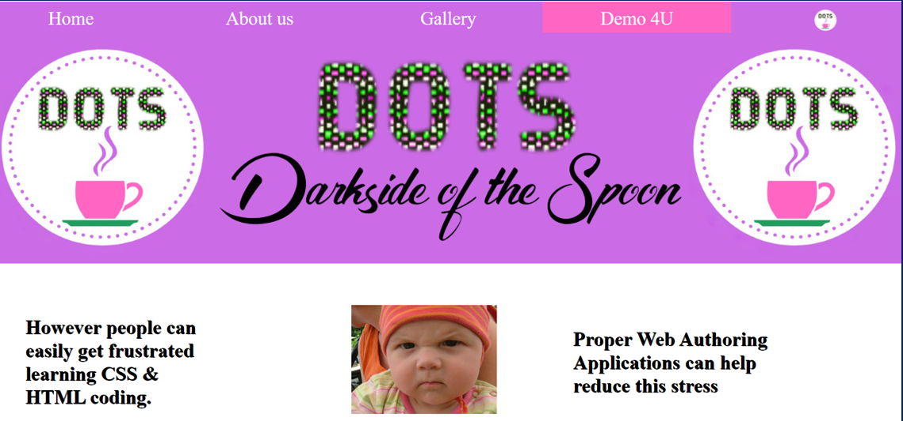
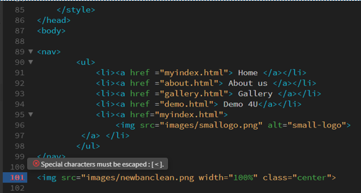
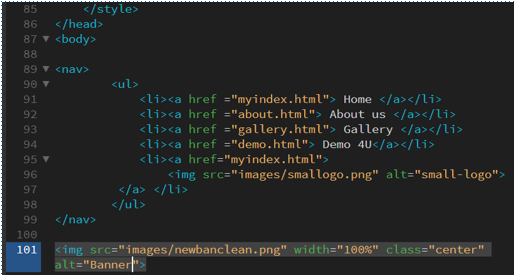

Web Authoring for Personal,
or Small Enterprise Scale
With applications such as Notepad++ one can easily begin to code webpages, using your web-browser to then see what you have published. Combining this freeware source code editor, and your browser, you can use sites like w3schools.com to produce web pages like the one below.

Proper web authoring applications can assist in reducing this stress by providing a live split view of code and a preview of the web page. Applications such as Adobe Dreamweaver provide this service, and they can identify coding errors and prompt solutions. This feature can help as otherwise you must scroll through code to find errors.
“Web authoring is the practice of creating web documents using modern web authoring software and tools. Web authoring software is a type of desktop publishing tool that allows users to navigate the tricky environment of HTML and web coding by offering a different kind of graphical user interface.” (Techopedia, 2022)
Similarly, Dreamweaver provides prompts on which features are available after selecting a primary feature. In the first column of the table below, the application highlights in red that there is an issue with this line of code. Its initial prompt is one stating I’m missing a special character – namely the closing quotation mark on my image file type .png – which I can remedy. It then instructs me to apply an alt tag naming the image alt=“small-logo”.
|  |  |
Searching large sections of code for an error manually is frustrating, similarly notepad++ does not pick up missing alt tags for example. Web authoring applications like Adobe’s Dreamweaver reduce this need and stress. Adobe’s suite has other complientary applications like Adobe XD where you can design a webpage adding layers and exporing the suitability of Font-size for example in fitting into your navigation.
Other web authoring application providers include Wix, Wordpress, Webflow, Corel Website Creator & Xara Web Designer.
Content Management Systems (CMS)
On a smaller scale as outlined above a person might manage a small website that remains relatively static. However on bigger projects that change or are updated routinely, or where many people need to be able to add or edit webpages a content managements system is preferable.
“A Content Management System is a software application used to create and design web content online. It allows the users to manage the digital content easily by providing access to features like database handling, smart reporting, archiving, designing and animation features. These are generally used in Enterprise Content Management (ECM) and Web Content Management (WCM)” (Bansal, 2021)
In a large business or in a community forum, you might want web users to have varying degrees of access to modify pages. The main format of webpages might be under the control of a select few. A CMS facilitates varying degrees of authorised access
Individuals with higher authority levels like a moderator could remove inappropriate content, or alter aspects of the webpage like navigation, colour scheme, layout etc. However, many people might want to be able to publish or modify posts and with a lesser administrative status.
A journalist might want to add a story, or a forum member create a thread. Without having the relevant skills to complete these tasks on their own, a content management system permits these people to complete their goals.
A CMS might permit a forum member to create a post by entering their message. Or create a thread with their thread title, their post with common features like formatting text or adding multimedia content in a streamlined process.
CMS processes are typically refined to 2 core aspects:
- A content management application (CMA) – This aspect dependent on authorisation level allows you to add and manage your content on the website.
- A content delivery application (CDA) – This aspect relates to the processing of the data you input in the CMA: storing it appropriately and making it accessible to would be site/page visitors.
In this regard many people can be adding value to a website, creating new pages, threads or stories. Many of the technical aspects are automated for their ease, and in protecting the website from crashes due to wild coding attempts.
Articles or threads can retain a greater consistency in their visual format, layout and colour scheme. Images, audio & video files can be easily added to libraries automatically, stored and retrieved efficiently for the sites visitors to enjoy.
There are many providers in the market such as: Joomla, Drupal, Squarespace, Kinsta, WordPress, Shopify, Adobe Experience Manager Sites & Mambo. With many applications in addition to those outlined earlier:
- Multilingual CMS – translating pages & communications to meet a global audience
- E-commerce CMS – like Shopify users can edit and post new items in their stores
- Education – providing online courses or materials with project submission and feedback features
- Booking systems – for clients booking services, time slots and processing cancelations
- Inventory & Sales processing – monitoring stock levels & printing labels for deliveries or product packaging
- Web Security & Payment Processing – securing the site and payment processing